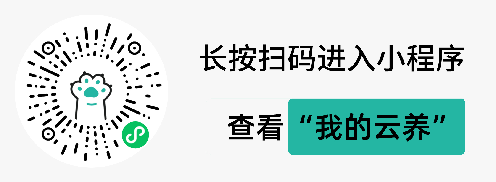

<!DOCTYPE html>
<html lang="en">
  <head>
    <meta charset="UTF-8" />
    <meta http-equiv="X-UA-Compatible" content="IE=edge" />
    <link rel="stylesheet" href="static/css/common.css" />
    <link rel="stylesheet" href="static/components/weui/jquery-weui.css" />
    <link rel="stylesheet" href="static/components/weui/weui.css" />
    <!-- <link rel="stylesheet" href="static/css/home.css" /> -->
    <meta name="apple-mobile-web-app-capable" content="yes" />
    <meta name="color-scheme" content="light" />
    <meta
      name="viewport"
      content="width=device-width, initial-scale=1.0, minimum-scale=1.0, maximum-scale=1.0, user-scalable=no"
    />
    <!-- <meta name="viewport" content="width=device-width, initial-scale=1.0" /> -->
    <title>下载握爪APP</title>
    <style>
      body {
        background-color: #fff;
        text-align: center;
        height: 100vh;
        position: relative;
        display: flex;
        justify-content: center;
        align-items: center;
      }
      .btn {
        margin: 49vh auto;
        width: 30vw;
        background-color: #1aad19;
        color: #fff;
        box-sizing: border-box;
        font-size: 18px;
        text-align: center;
        text-decoration: none;
        color: #fff;
        line-height: 2.55555556;
        border-radius: 5px;
        padding: 4px 12px;
      }
      .myImg {
        position: absolute;
        top: 3vw;
        left: 2vw;
      }
      .main_content {
      }
      .main_content > img {
        width: 80%;
        margin: 4vw 0;
      }
    </style>
  </head>

  <body>
    
    <!-- <button class="btn">打开小程序</button> -->

    <div class="main_content">
      <!--        -->
      
    </div>
    <!-- <wx-open-launch-weapp id="launch-btn" username="gh_07b76b853d12" path="">
      <script type="text/wxtag-template">
        <style>
          .btn{
            padding:12px;
            background-color: #1aad19;
            color: #fff;
          }
        </style>
        <button class="btn">打开小程序</button>
      </script>
    </wx-open-launch-weapp> -->
    <script type="text/javascript" src="static/js/common/md5.js"></script>
    <script
      type="text/javascript"
      src="static/js/common/jquery-3.4.1.min.js"
    ></script>
    <script
      type="text/javascript"
      src="http://res.wx.qq.com/open/js/jweixin-1.6.0.js"
    ></script>
    <script
      type="text/javascript"
      src="static/components/weui/jquery-weui.min.js"
    ></script>
    <script
      type="text/javascript"
      src="static/components/weui/weui.min.js"
    ></script>
    <script type="text/javascript" src="static/js/common/common.js"></script>
    <script type="text/javascript" src="static/js/jump_mp.js"></script>
    <!-- <script
      type="text/javascript"
      src="static/js/common/vconsole.min.js"
    ></script> -->
  </body>
</html>
